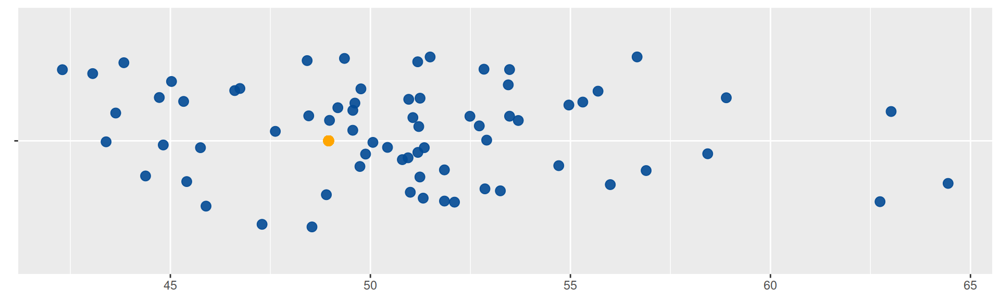
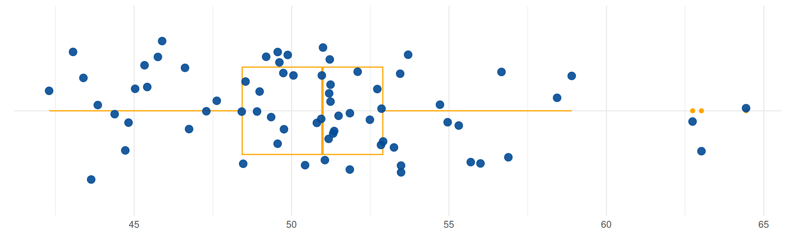

Indicadores de Posición
Nivelatorio de Estadística
Una de las dificultades que se presentan al tratar de interpretar los valores de una variables es el de poder la resumir en uno pocos indicadores que los represente, para lo cual es necesario utilizar indicadores que los caractericen.
Para los datos cuantitativos se pueden utilizar tablas de frecuencia para identificando el valor más repitido, indicador que se denomina MODA.
Para las variable cuantitativas existen una serie de indicadores que caracterizan y facilitan su análisis como son :
- Indicadores de posición
- Indicadores de centro
- Indicadores de dispersión o variabilidad
- Indicadores de forma
Iniciaremos con los indicadores de posición
 Figura 1.2 Carrera atletica Tomada
de : https://pixabay.com/
Figura 1.2 Carrera atletica Tomada
de : https://pixabay.com/
La posición final de un atleta en una competencia indica cual es su nivel frente a un grupo de competidores, de igual manera los indicadores de posición hacen referencia a la ubicación de un valor frente al grupo. Además del ganador y el último existen un gran número de valores intermedio que nos ayudan en el análisis de un grupo de datos
Percentiles
Los percentiles corresponden a 99 valores que dividen los datos en cien partes de igual porcentaje (\(P_{1}\), \(P_{2}\), \(P_{3}\), \(P_{4}\), \(\cdots\) ,\(P_{99}\)).
Ejemplo
Los siguientes datos corresponde a tiempos registrados por 70 atletas durante una carrera de 10.5 kilómetros obtenidos de manera simulada que nos servirán de apoyo para visualizar y entender los indicadores de posición.
51.4 49.9 49.3 51.2 51.2 45.7 48.4 47.3 49.0 50.1 50.9 45.4 55.7 48.9 56.0 44.7 56.9 46.6 53.3 48.5 49.7 45.0 63.0 51.0 50.4 51.2 53.5 52.1 49.6 45.9 49.8 42.3 53.5 54.7 53.5 56.7 44.4 51.2 51.1 55.0 64.4 51.8 45.3 62.7 43.8 51.3 53.7 51.0 52.9 43.1 43.6 51.2 52.8 49.2 49.6 49.6 51.5 55.3 46.7 47.6 51.8 58.9 50.8 43.4 48.5 52.7 44.8 52.5 58.4 52.9
library(ggplot2)
x=c(51.35, 49.88, 49.35, 51.21, 51.24, 45.75, 48.42, 47.29, 48.98, 50.06, 50.94, 45.41, 55.69, 48.90, 56.00, 44.72, 56.89, 46.61, 53.25, 48.46, 49.74, 45.03, 63.02, 50.96, 50.43, 51.19, 53.45, 52.10, 49.61, 45.89, 49.76, 42.30, 53.48, 54.71, 53.48, 56.67, 44.38, 51.18, 51.06, 54.96, 64.44, 51.85, 45.33, 62.74, 43.84, 51.32, 53.70, 51.00, 52.86, 43.06, 43.63, 51.24, 52.84, 49.19, 49.56, 49.56, 51.49, 55.31, 46.74, 47.62, 51.85, 58.90, 50.80, 43.39, 48.54, 52.72, 44.82, 52.49, 58.43, 52.91)
data1 <- data.frame(
name1=rep("A",70),
value1=x
)
# Supongamos que data1 es tu conjunto de datos
# Crear un gráfico base
p2 <- ggplot(data1, aes(x = value1, y = " ")) +
geom_jitter(color = "#034A94", size = 3, alpha = 0.9) +
geom_text(data = data1, x = 50.5, y = 0, label = "x", col = "#034A94") +
# Eliminar el eje y y el nombre de la variable en la leyenda
theme(axis.title.y = element_blank(),
axis.title.x = element_blank(),
legend.title = element_blank())
# Mostrar el gráfico
print(p2) Figura 1.3 Tiempos de carrera en minutos
Fuente : Carrera La Luz Cali
Figura 1.3 Tiempos de carrera en minutos
Fuente : Carrera La Luz Cali
El percentil 30 divide la muestra en dos partes. 30% por debajo y un 70% por encima de este valor. Para el conjunto de tiempos el \(P_{30}\) corresponde a un valor de \(48.96\), valor que se representa con un punto naranja en la gráfica de puntos. Este valor corresponde al tiempo empleado por un atleta cuya posición está por encima del 30% de los participantes, pero por debajo del 70% de los que gastaron mayor tiempo.
Nota
Para facilitar la interpretación de los resultados se transforman a minutos.segundos.
# Calcular el percentil 30
cat("percentil 30 :", quantile(data1$value1, 0.30) )percentil 30 : 48.956library(ggplot2)
x = c(51.35, 49.88, 49.35, 51.21, 51.24, 45.75, 48.42, 47.29, 48.98, 50.06, 50.94, 45.41, 55.69, 48.90, 56.00, 44.72, 56.89, 46.61, 53.25, 48.46, 49.74, 45.03, 63.02, 50.96, 50.43, 51.19, 53.45, 52.10, 49.61, 45.89, 49.76, 42.30, 53.48, 54.71, 53.48, 56.67, 44.38, 51.18, 51.06, 54.96, 64.44, 51.85, 45.33, 62.74, 43.84, 51.32, 53.70, 51.00, 52.86, 43.06, 43.63, 51.24, 52.84, 49.19, 49.56, 49.56, 51.49, 55.31, 46.74, 47.62, 51.85, 58.90, 50.80, 43.39, 48.54, 52.72, 44.82, 52.49, 58.43, 52.91)
data1 <- data.frame(
name1 = rep("A", 70),
value1 = x
)
# Calcular el percentil 30
percentil_30 <- quantile(data1$value1, 0.3)
# Crear un gráfico base
p <- ggplot(data1, aes(x = value1, y = " ")) +
geom_jitter(color = "#034A94", size = 3, alpha = 0.9) +
geom_text(data = data1, x = 50.5, y = 0, label = "x", col = "#034A94") +
# Agregar un punto para el percentil 30 en color naranja
geom_point(x = percentil_30, color = "orange", size = 3) +
# Eliminar el eje y y el nombre de la variable en la leyenda
theme(axis.title.y = element_blank(),
axis.title.x = element_blank(),
legend.title = element_blank())
# Mostrar el gráfico
p
Figura 1.4 Tiempos de carrera en minutos - Percentil 30 Fuente : Carrera La Luz CaliEl percentil 75 divide la muestra en dos partes, una parte inferior conformada por un 75% de los datos y un restante 25% por encima. En el conjunto de datos del ejemplo 1, corresponde a un valor de 52.90, el cual se representa en la siguiente gráfica con un punto naranja.
# Calcular el percentil 30
cat("percentil 75 :", quantile(data1$value1, 0.75) )percentil 75 : 52.8975library(ggplot2)
x = c(51.35, 49.88, 49.35, 51.21, 51.24, 45.75, 48.42, 47.29, 48.98, 50.06, 50.94, 45.41, 55.69, 48.90, 56.00, 44.72, 56.89, 46.61, 53.25, 48.46, 49.74, 45.03, 63.02, 50.96, 50.43, 51.19, 53.45, 52.10, 49.61, 45.89, 49.76, 42.30, 53.48, 54.71, 53.48, 56.67, 44.38, 51.18, 51.06, 54.96, 64.44, 51.85, 45.33, 62.74, 43.84, 51.32, 53.70, 51.00, 52.86, 43.06, 43.63, 51.24, 52.84, 49.19, 49.56, 49.56, 51.49, 55.31, 46.74, 47.62, 51.85, 58.90, 50.80, 43.39, 48.54, 52.72, 44.82, 52.49, 58.43, 52.91)
data1 <- data.frame(
name1 = rep("A", 70),
value1 = x
)
# Calcular el percentil 30
percentil_75 <- quantile(data1$value1, 0.75)
# Crear un gráfico base
p <- ggplot(data1, aes(x = value1, y = " ")) +
geom_jitter(color = "#034A94", size = 3, alpha = 0.9) +
geom_text(data = data1, x = 50.5, y = 0, label = "x", col = "#034A94") +
# Agregar un punto para el percentil 30 en color naranja
geom_point(x = percentil_75, color = "orange", size = 3) +
# Eliminar el eje y y el nombre de la variable en la leyenda
theme(axis.title.y = element_blank(),
axis.title.x = element_blank(),
legend.title = element_blank())
# Mostrar el gráfico
p
Deciles
Los deciles por su parte corresponden a 9 número que dividen la muestra en 10 partes, cada una con un 10% de la muestra (\(D_{1}, D_{2}, D_{3}, D_{4}, \cdots , D_{9}\))
Ejemplo
El decil 2 (\(D_{2}\)), tiene por debajo del el, el 20% de los datos
 Figura 1.6 Tiempos de carrera en minutos - Decil 2 y
Decil 5 Fuente : Carrera La Luz Cali
Figura 1.6 Tiempos de carrera en minutos - Decil 2 y
Decil 5 Fuente : Carrera La Luz Cali
Para el conjunto de datos del ejemplo 1 el \(D_{2} = 46.72\). Si suponemos que solo el 20% de los corredores con mejor tiempo serán seleccionados para otro evento. Entonces los corredores con tiempo inferiores a \(D_{2}\) = \(P_{20} = 46.43\) minutos estarían seleccionados. El decil 5 corresponde a la posición por debajo del cual se encuentra el 50% de los tiempos del grupo : \(D_{5} =51.0\).
Cuartiles
Y finalmente los cuartiles corresponden a 3 números que dividen la muestra en cuatro partes de igual porcentaje (\(Q_{1}\), \(Q_{2}\), \(Q_{3}\)), con los cuales se construye el diagrama de cajas que permiten detectar datos atípicos
Ejemplo
library(ggplot2)
x = c(51.35, 49.88, 49.35, 51.21, 51.24, 45.75, 48.42, 47.29, 48.98, 50.06, 50.94, 45.41, 55.69, 48.90, 56.00, 44.72, 56.89, 46.61, 53.25, 48.46, 49.74, 45.03, 63.02, 50.96, 50.43, 51.19, 53.45, 52.10, 49.61, 45.89, 49.76, 42.30, 53.48, 54.71, 53.48, 56.67, 44.38, 51.18, 51.06, 54.96, 64.44, 51.85, 45.33, 62.74, 43.84, 51.32, 53.70, 51.00, 52.86, 43.06, 43.63, 51.24, 52.84, 49.19, 49.56, 49.56, 51.49, 55.31, 46.74, 47.62, 51.85, 58.90, 50.80, 43.39, 48.54, 52.72, 44.82, 52.49, 58.43, 52.91)
data1 <- data.frame(
name1 = rep("A", 70),
value1 = x
)
# Crear un gráfico base con diagrama de cajas y puntos superpuestos de forma horizontal
p2 <- ggplot(data1, aes(y = " ", x = value1)) +
geom_boxplot(width = 0.5, color = "orange", fill = NA) +
geom_jitter(color = "#034A94", size = 3, alpha = 0.9) +
# Agregar puntos de color azul
scale_color_manual(values = "blue") +
# Eliminar el eje y y el nombre de la variable en la leyenda
theme_minimal() +
# Eliminar el eje y y el nombre de la variable en la leyenda
theme(axis.title.y = element_blank(),
axis.title.x = element_blank(),
legend.title = element_blank())
# Mostrar el gráfico
print(p2)
Figura 1.7 Tiempos de carrera en minutos - Cuartiles: \(Q_1\), \(Q_2\) y \(Q_3\) Fuente : Carrera La Luz Cali<>
En este caso los cuartiles \(Q_1 = 46.72\), \(Q_2 = 50.98\) y \(Q_3 = 52.90\), están representados por las líneas verticales que conforman la caja. La línea central de la caja representa a \(Q_{2}\) y divide los datos en dos partes de igual porcentaje (50% | 50%). Los puntos azules ubicados a derecha del gráfico representan datos atípicos que deben ser objeto de estudio por separado para determinar sus causas, en unos casos y de exclusión en otros casos para evitar que causen desvíos en los indicadores.
Codigo R
Los percentiles pueden ser calculados mediante la función
quantile() . El siguiente código ilustra la obtención de
los cuartiles
x=c(51.35, 49.88, 49.35, 51.21, 51.24, 45.75, 48.42, 47.29, 48.98, 50.06, 50.94, 45.41, 55.69, 48.90, 56.00, 44.72, 56.89, 46.61, 53.25, 48.46, 49.74, 45.03, 63.02, 50.96, 50.43, 51.19, 53.45, 52.10, 49.61, 45.89, 49.76, 42.30, 53.48, 54.71, 53.48, 56.67, 44.38, 51.18, 51.06, 54.96, 64.44, 51.85, 45.33, 62.74, 43.84, 51.32, 53.70, 51.00, 52.86, 43.06, 43.63, 51.24, 52.84, 49.19, 49.56, 49.56, 51.49, 55.31, 46.74, 47.62, 51.85, 58.90, 50.80, 43.39, 48.54, 52.72, 44.82, 52.49, 58.43, 52.91)
quantile(x, c(0.25,0.50,0.75)) 25% 50% 75%
48.4300 50.9800 52.8975